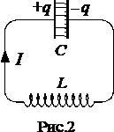

Свободные электрические колебания в контуре без активного сопротивления
В цепи, содержащей индуктивность и емкость, могут возникать электрические колебания. Поэтому такая цепь называется колебательным контуром. На рис.1 изображены последовательные стадии колебательного процесса в идеализированном контуре, не обладающем активным сопротивлением.
Колебания в контуре можно вызвать, либо сообщив обкладкам конденсатора некоторый начальный заряд, либо возбудив в индуктивности ток (например, путем включения внешнего магнитного поля, пронизывавшего витки катушки). Воспользуемся первым способом. Присоединим отключенный от индуктивности конденсатор и источнику напряжения. Это приведет и возникновению на обкладках разноименных зарядов +q и -q (стадия 1). Между обкладками возникнет электрическое поле, энергия которого равна \(_{W_{E}}=\frac{q^{2}}{2C}\) Если затем отключить источили напряжения и замкнуть конденсатор на индуктивность, емкость начнет разряжаться и в контуре потечет ток. В результате энергия электрического поля будет уменьшаться, но зато возникнет все возрастающая энергия магнитного поля \(_{W_{M}}=\frac{LI^{2}}{2}\), обусловленного током, текущим через индуктивность.

Поскольку активное сопротивление контура равно нулю, полная энергия, слагающаяся из энергий электрического и магнитного полей, не расходуется на нагревание проводов и будет оставаться постоянной. По-этому в момент, когда напряжение на конденсаторе, а следовательно, и энергия электрического поля обращаются в нуль, энергия магнитного по-ля, а значит, и ток достигают наибольшего значения (стадия 2; начиная с этого момента ток течет за счет ЭДС самоиндукции). В дальнейшем ток уменьшается, и, когда заряды на обкладках достигнут первоначального значения , сила тока станет равной нулю (стадия 3). Затем те же процессы протекают в обратном направлении (стадии 4 и 5), после чего система приходит в исходное состояние (стадия 5) и весь цикл повторяется снова и снова. В ходе процесса периодически изменяются (т. е. колеблются) заряд на обкладках, напряжение на конденсаторе и сила тока, текущего через индуктивность. Колебания сопровождаются взаимными превращениями энергий электрического и магнитного полей.
На рис. 1 колебаниям в контуре сопоставлены колебания пружинного маятника. Сообщению зарядов обкладкам конденсатора соответствует выведение маятника внешней силой из положения равновесия и сообщение ему первоначального отклонения x. При этом возникает потенциальная энергия упругой деформации пружины, равная \(_{E_{p}}=\frac{kx^{2}}{2}\). Стадии 2 соответствует прохождение маятника через положение равновесия. В этот момент квазиупругая сила равна нулю и маятник продолжает двигаться по инерции. К этому времени энергия маятника полностью переходит в кинетическую и определяется выражением \(_{E_{k}}=\frac{m\vartheta ^{2}}{2}\) и т.д. Аналогия между электрическими и механическими колебаниями распространяется и на описывающие их математические уравнения. Найдем уравнение колебаний в контуре без активного сопротивления. Условимся считать положительным ток, заряжающий конденсатор (рис.2).

Для цепи (рис.2) из обобщенного закона Ома для участка цепи следует $$-\frac{q}{C}-L\frac{dL}{dt}=0\; (1)$$ где первое слагаемое – напряжение на конденсаторе, а второе ЭДС самоиндукции возникающая в катушке индуктивности. Используя определение силы тока \(I=\frac{dq}{dt}\), от уравнения (1) можно перейти к уравнению для заряда на конденсаторе: $$\ddot{q}+\frac{1}{LC}q=0. \; (2)$$
Если ввести обозначение \(w_{0}=\frac{1}{\sqrt{LC}}\) уравнение (2) примет вид $$\ddot{q}+w^{2}_{0}q=0.\; (3)$$
Последнее уравнение называется уравнением гармонического осциллятора, решением которого является функция $$q=q_{m}cos(w_{0}t+\alpha ).\; (4)$$
Таким образом, заряд на обкладках конденсатора изменяется по гармоническому закону с частотой, определяемой выражением \(w_{0}\), которая называется собственной частотой контура (она соответствует собственной частоте гармонического осциллятора).
Напряжение на конденсаторе отличается от заряда множителем 1/C: $$U=\frac{q_{m}}{C}cos(w_{0}t+\alpha )=U_{m}cos(w_{0}t+\alpha ).\; (5)$$
Продифференцировав функцию (4) по времени, получим выражение для силы тока $$I=-w_{0}q_{m}sin(w_{0}t+\alpha )=I_{m}cos(w_{0}t+\alpha +\frac{\pi }{2}).\; (6)$$
Таким образом, сила тока опережает по фазе напряжение на конденсаторе на \(\pi /2\). В момент, когда ток достигает наибольшего значения, заряд и напряжение обращаются в нуль и наоборот. Это соотношение между зарядом и током уже было установлено ранее, основываясь на энергетических соображениях.
Из формул (5) и (6) видно, что $$U_{m}=\sqrt{\frac{L}{CI_{m}}}.\; (7)$$